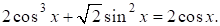
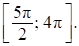

Авторский разбор и аудит предварительны; внешней экспертизы нет.
Модель автора: claude-opus-5-5 (opus; effort=low); в основных частотах: True ·
Дайте развернутый ответ.

б) Укажите корни этого уравнения, принадлежащие отрезку 
КЭС: 2.3 Тригонометрические уравнения; 2.5 Целые и дробно-рациональные неравенства
а) πk, ±π/4+2πk, k∈Z; б) 3π, 15π/4, 4π
| ID / вход | Действие | Результат | Локальные KC |
|---|---|---|---|
| s1 · condition | Перенести 2cos x влево, вынести 2cos x и заменить cos²x−1 на −sin²x | −2cos x·sin²x+√2 sin²x=0 | kc1 |
| s2 · s1 | Разложить на множители | sin²x(√2−2cos x)=0 | kc2 |
| s3 · s2 | Решить sin x=0 и cos x=√2/2 | x=πk; x=±π/4+2πk, k∈Z | kc3 |
| s4 · s3, condition | Отобрать корни на отрезке [5π/2; 4π] | 3π, 15π/4, 4π | kc4 |
[
{
"id": "m1",
"name": "Разложение на множители через основное тождество и отбор корней",
"step_ids": [
"s1",
"s2",
"s3",
"s4"
]
}
]Заменить выражение вида cos²x−1 или 1−sin²x эквивалентным через другую функцию для приведения уравнения к общему множителю
{
"local_kc_id": "kc1",
"status": "match",
"catalog_kc_id": "literal_6d4854d97c9c",
"evidence": [
{
"ref": "step:s1:action",
"quote": "заменить cos²x−1 на −sin²x"
},
{
"ref": "step:s1:result",
"quote": "−2cos x·sin²x+√2 sin²x=0"
}
],
"context_refs": [
"image:assets/7b95f6dda76af35b9dbe9478.png"
],
"alternatives_checked": [
{
"catalog_kc_id": "literal_cc7d68a38f29",
"reason": "формулы приведения и двойного угла, а не sin²+cos²=1"
},
{
"catalog_kc_id": "literal_55d5a6d9eb3c",
"reason": "то же: приведение и двойной угол"
},
{
"catalog_kc_id": "literal_3d70ab3eb24a",
"reason": "только формула двойного угла"
}
],
"rationale": "Замена cos²x−1 на −sin²x — прямое применение sin²x+cos²x=1. Перенос слагаемого и вынесение 2cos x в том же шаге — сопутствующие алгебраические операции, в кандидат не входят.",
"proposal": null,
"blocking": false,
"issue_ids": []
}Вынести общий множитель в уравнении с нулевой правой частью и перейти к совокупности уравнений, где каждый множитель равен нулю (при определённости всех множителей)
{
"local_kc_id": "kc2",
"status": "match",
"catalog_kc_id": "zero_product",
"evidence": [
{
"ref": "step:s2:result",
"quote": "sin²x(√2−2cos x)=0"
},
{
"ref": "step:s3:action",
"quote": "Решить sin x=0 и cos x=√2/2"
}
],
"context_refs": [
"step:s1:result"
],
"alternatives_checked": [
{
"catalog_kc_id": "literal_cab525070130",
"reason": "факторизация многочлена для исследования знака, а не уравнение с нулевой правой частью"
}
],
"rationale": "Вынесение sin²x при нулевой правой части и переход к уравнениям sin x=0 и cos x=√2/2 соответствует получению нулей множителей; оба множителя определены на всей прямой. Переход к совокупности виден только в формулировке s3, отдельной записи нет.",
"proposal": null,
"blocking": false,
"issue_ids": []
}Записать общую серию решений уравнения sin x=a или cos x=a с |a|≤1 через табличные значения
{
"local_kc_id": "kc3",
"status": "match",
"catalog_kc_id": "elementary_trig_equation",
"evidence": [
{
"ref": "step:s3:action",
"quote": "Решить sin x=0 и cos x=√2/2"
},
{
"ref": "step:s3:result",
"quote": "x=πk; x=±π/4+2πk, k∈Z"
}
],
"context_refs": [
"step:s2:result"
],
"alternatives_checked": [],
"rationale": "Решены простейшие уравнения sin x=0 и cos x=√2/2 на всей прямой с полными периодическими сериями; серии верны.",
"proposal": null,
"blocking": false,
"issue_ids": []
}По сериям решений найти все значения параметра серии, при которых корень лежит в заданном отрезке, с учётом концов
{
"local_kc_id": "kc4",
"status": "match",
"catalog_kc_id": "periodic_interval",
"evidence": [
{
"ref": "step:s4:action",
"quote": "Отобрать корни на отрезке [5π/2; 4π]"
},
{
"ref": "step:s4:result",
"quote": "3π, 15π/4, 4π"
}
],
"context_refs": [
"step:s3:result",
"image:assets/e693af57e0b60f65f01fb46b.png"
],
"alternatives_checked": [
{
"catalog_kc_id": "literal_8409c9003f48",
"reason": "для конечного набора корней без периодического параметра"
},
{
"catalog_kc_id": "literal_6ad8f502588e",
"reason": "общая проверка точек без периодических серий"
}
],
"rationale": "Отбор из периодических серий на отрезке [5π/2;4π] с включёнными концами; результат 3π, 15π/4, 4π верен (π/4+2πk и 9π/4 вне отрезка). Перебор параметра явно не записан, виден только итог.",
"proposal": null,
"blocking": false,
"issue_ids": []
}[]
[]
{
"author_path": "data/annotation/runs/2026-11-07-fipi-team-bogdan108-051-150/raw/author/015B20.json",
"auditor_path": "data/annotation/runs/2026-11-07-fipi-team-bogdan108-051-150/raw/auditor/015B20.json",
"accepted_after_review": null
}